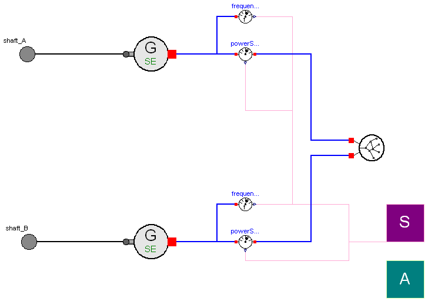
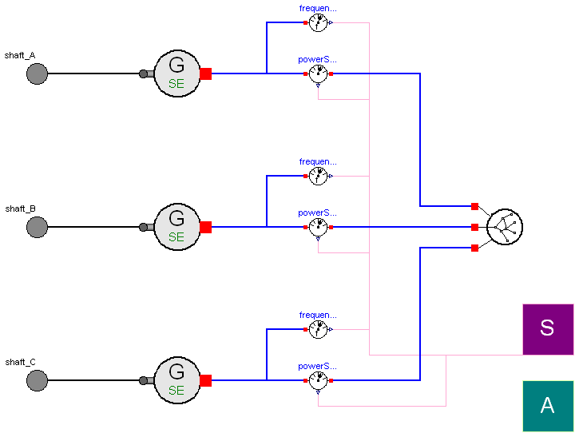

| Name | Description |
|---|---|
| SingleShaft_SE | Alternator group in configuration single-shaft (one generator) |
| DoubleShaft_SE | Alternator group in configuration double-shaft (two generator) |
| Alternator group in configuration triple-shaft (three generator) |

| Type | Name | Default | Description |
|---|---|---|---|
| Frequency | fn | 50 | Nominal frequency of the grid [Hz] |
| Power | Pn | Nominal power installed on the grid [W] | |
| Real | eta | 1 | Conversion efficiency of the electric generator |
| MomentOfInertia | J_shaft | 0 | Total inertia of the system [kg.m2] |
| Real | d_shaft | 0 | Damping constant of the shaft |
| AngularVelocity | omega_nom | 2*Modelica.Constants.pi*fn/2 | Nominal angular velocity of the shaft [rad/s] |
| Power | Pmax | Outlet maximum power [W] | |
| Angle | delta_start | Loaded angle start value [rad] |
| Type | Name | Description |
|---|---|---|
| Flange_a | shaft | |
| Sensors | SensorsBus | |
| Actuators | ActuatorsBus |
model SingleShaft_SE
"Alternator group in configuration single-shaft (one generator)"
extends ThermoPower.PowerPlants.ElectricGeneratorGroup.Interfaces.SingleShaft;
parameter SI.Power Pmax "Outlet maximum power";
parameter SI.Angle delta_start "Loaded angle start value";
Electrical.Grid grid(fn=fn, Pn=Pn);
Components.PowerSensor powerSensor;
Components.FrequencySensor frequencySensor;
ThermoPower.PowerPlants.ElectricGeneratorGroup.Components.OldElementsSwingEquation.Generator_SE
generator_SE(
eta=eta,
Pmax=Pmax,
J=J_shaft,
delta_start=delta_start,
omega_nom=omega_nom);
equation
connect(SensorsBus.power, powerSensor.W);
connect(SensorsBus.frequency, frequencySensor.f);
connect(generator_SE.shaft, shaft);
connect(generator_SE.powerConnection, powerSensor.port_a);
connect(powerSensor.port_b, grid.connection);
connect(frequencySensor.port, generator_SE.powerConnection);
end SingleShaft_SE;
 ThermoPower.PowerPlants.ElectricGeneratorGroup.Examples.OldSwingEquation.DoubleShaft_SE
ThermoPower.PowerPlants.ElectricGeneratorGroup.Examples.OldSwingEquation.DoubleShaft_SE
| Type | Name | Default | Description |
|---|---|---|---|
| Frequency | fn | 50 | Nominal frequency of the grid [Hz] |
| Power | Pn | Nominal power installed on the grid [W] | |
| Generator-Shaft A | |||
| Real | eta_A | 1 | Conversion efficiency of the electric generator |
| MomentOfInertia | J_shaft_A | 0 | Total inertia of the steam turbogenerator [kg.m2] |
| Real | d_shaft_A | 0 | Damping constant of the shaft |
| AngularVelocity | omega_nom_A | 2*Modelica.Constants.pi*fn/2 | Nominal angular velocity of the shaft [rad/s] |
| Power | Pmax_A | Outlet maximum power [W] | |
| Angle | delta_start_A | Loaded angle start value [rad] | |
| Generator-Shaft B | |||
| Real | eta_B | 1 | Conversion efficiency of the electric generator |
| MomentOfInertia | J_shaft_B | 0 | Total inertia of the steam turbogenerator [kg.m2] |
| Real | d_shaft_B | 0 | Damping constant of the shaft |
| AngularVelocity | omega_nom_B | 2*Modelica.Constants.pi*fn/2 | Nominal angular velocity of the shaft [rad/s] |
| Power | Pmax_B | Outlet maximum power [W] | |
| Angle | delta_start_B | Loaded angle start value [rad] | |
| Type | Name | Description |
|---|---|---|
| Flange_a | shaft_B | |
| Flange_a | shaft_A | |
| Sensors | SensorsBus | |
| Actuators | ActuatorsBus |
model DoubleShaft_SE
"Alternator group in configuration double-shaft (two generator)"
extends ThermoPower.PowerPlants.ElectricGeneratorGroup.Interfaces.DoubleShaft;
parameter SI.Power Pmax_A "Outlet maximum power";
parameter SI.Angle delta_start_A "Loaded angle start value";
parameter SI.Power Pmax_B "Outlet maximum power";
parameter SI.Angle delta_start_B "Loaded angle start value";
Components.PowerSensor powerSensor_A;
Components.FrequencySensor frequencySensor_A;
Components.PowerSensor powerSensor_B;
Components.FrequencySensor frequencySensor_B;
ThermoPower.PowerPlants.ElectricGeneratorGroup.Components.Grid_2in grid(
Pn=Pn, fn=fn);
Components.OldElementsSwingEquation.Generator_SE generator_SE_A(
eta=eta_A,
Pmax=Pmax_A,
J=J_shaft_A,
delta_start=delta_start_A,
omega_nom=omega_nom_A);
ThermoPower.PowerPlants.ElectricGeneratorGroup.Components.OldElementsSwingEquation.Generator_SE
generator_SE_B(
eta=eta_B,
Pmax=Pmax_B,
J=J_shaft_B,
delta_start=delta_start_B,
omega_nom=omega_nom_B);
equation
connect(SensorsBus.power_shaftA, powerSensor_A.W);
connect(SensorsBus.power_shaftB, powerSensor_B.W);
connect(SensorsBus.frequency_shaftA, frequencySensor_A.f);
connect(SensorsBus.frequency_shaftB, frequencySensor_B.f);
connect(powerSensor_B.port_b, grid.connection_B);
connect(grid.connection_A, powerSensor_A.port_b);
connect(generator_SE_B.powerConnection, powerSensor_B.port_a);
connect(frequencySensor_B.port, generator_SE_B.powerConnection);
connect(powerSensor_A.port_a, generator_SE_A.powerConnection);
connect(frequencySensor_A.port, generator_SE_A.powerConnection);
connect(generator_SE_A.shaft, shaft_A);
connect(generator_SE_B.shaft, shaft_B);
end DoubleShaft_SE;
 ThermoPower.PowerPlants.ElectricGeneratorGroup.Examples.OldSwingEquation.TripleShaft_SE
ThermoPower.PowerPlants.ElectricGeneratorGroup.Examples.OldSwingEquation.TripleShaft_SE
| Type | Name | Default | Description |
|---|---|---|---|
| Frequency | fn | 50 | Nominal frequency of the grid [Hz] |
| Power | Pn | Nominal power installed on the grid [W] | |
| Generator-Shaft A | |||
| Real | eta_A | 1 | Conversion efficiency of the electric generator |
| MomentOfInertia | J_shaft_A | 0 | Total inertia of the steam turbogenerator [kg.m2] |
| Real | d_shaft_A | 0 | Damping constant of the shaft |
| AngularVelocity | omega_nom_A | 2*Modelica.Constants.pi*fn/2 | Nominal angular velocity of the shaft [rad/s] |
| Power | Pmax_A | Outlet maximum power [W] | |
| Angle | delta_start_A | Loaded angle start value [rad] | |
| Generator-Shaft B | |||
| Real | eta_B | 1 | Conversion efficiency of the electric generator |
| MomentOfInertia | J_shaft_B | 0 | Total inertia of the steam turbogenerator [kg.m2] |
| Real | d_shaft_B | 0 | Damping constant of the shaft |
| AngularVelocity | omega_nom_B | 2*Modelica.Constants.pi*fn/2 | Nominal angular velocity of the shaft [rad/s] |
| Power | Pmax_B | Outlet maximum power [W] | |
| Angle | delta_start_B | Loaded angle start value [rad] | |
| Generator-Shaft C | |||
| Real | eta_C | 1 | Conversion efficiency of the electric generator |
| MomentOfInertia | J_shaft_C | 0 | Total inertia of the steam turbogenerator [kg.m2] |
| Real | d_shaft_C | 0 | Damping constant of the shaft |
| AngularVelocity | omega_nom_C | 2*Modelica.Constants.pi*fn/2 | Nominal angular velocity of the shaft [rad/s] |
| Power | Pmax_C | Outlet maximum power [W] | |
| Angle | delta_start_C | Loaded angle start value [rad] | |
| Type | Name | Description |
|---|---|---|
| Flange_a | shaft_B | |
| Flange_a | shaft_A | |
| Flange_a | shaft_C | |
| Sensors | SensorsBus | |
| Actuators | ActuatorsBus |
model TripleShaft_SE
"Alternator group in configuration triple-shaft (three generator)"
extends ThermoPower.PowerPlants.ElectricGeneratorGroup.Interfaces.TripleShaft;
parameter SI.Power Pmax_A "Outlet maximum power";
parameter SI.Angle delta_start_A "Loaded angle start value";
parameter SI.Power Pmax_B "Outlet maximum power";
parameter SI.Angle delta_start_B "Loaded angle start value";
parameter SI.Power Pmax_C "Outlet maximum power";
parameter SI.Angle delta_start_C "Loaded angle start value";
Components.PowerSensor powerSensor_A;
Components.FrequencySensor frequencySensor_A;
Components.PowerSensor powerSensor_B;
Components.FrequencySensor frequencySensor_B;
Components.PowerSensor powerSensor_C;
Components.FrequencySensor frequencySensor_C;
Components.Grid_3in grid_3in(Pn=Pn, fn=fn);
ThermoPower.PowerPlants.ElectricGeneratorGroup.Components.OldElementsSwingEquation.Generator_SE
generator_SE_A(
eta=eta_A,
Pmax=Pmax_A,
J=J_shaft_A,
delta_start=delta_start_A,
omega_nom=omega_nom_A);
ThermoPower.PowerPlants.ElectricGeneratorGroup.Components.OldElementsSwingEquation.Generator_SE
generator_SE_B(
eta=eta_B,
Pmax=Pmax_B,
J=J_shaft_B,
delta_start=delta_start_B,
omega_nom=omega_nom_B);
ThermoPower.PowerPlants.ElectricGeneratorGroup.Components.OldElementsSwingEquation.Generator_SE
generator_SE_B1(
eta=eta_C,
Pmax=Pmax_C,
J=J_shaft_C,
delta_start=delta_start_C,
omega_nom=omega_nom_C);
equation
connect(SensorsBus.power_shaftC, powerSensor_C.W);
connect(SensorsBus.frequency_shaftC, frequencySensor_C.f);
connect(SensorsBus.power_shaftB, powerSensor_B.W);
connect(SensorsBus.frequency_shaftB, frequencySensor_B.f);
connect(SensorsBus.power_shaftA, powerSensor_A.W);
connect(SensorsBus.frequency_shaftA, frequencySensor_A.f);
connect(generator_SE_B1.powerConnection, powerSensor_C.port_a);
connect(frequencySensor_C.port, generator_SE_B1.powerConnection);
connect(powerSensor_B.port_a, generator_SE_B.powerConnection);
connect(frequencySensor_B.port, generator_SE_B.powerConnection);
connect(powerSensor_A.port_a, generator_SE_A.powerConnection);
connect(frequencySensor_A.port, generator_SE_A.powerConnection);
connect(generator_SE_A.shaft, shaft_A);
connect(generator_SE_B.shaft, shaft_B);
connect(generator_SE_B1.shaft, shaft_C);
connect(grid_3in.connection_A, powerSensor_A.port_b);
connect(grid_3in.connection_B, powerSensor_B.port_b);
connect(grid_3in.connection_C, powerSensor_C.port_b);
end TripleShaft_SE;